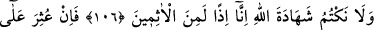
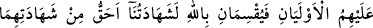
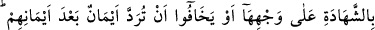
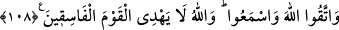

ŞAHİTLİK, VASİYETE ŞAHİTLİK
106. Ey îman edenler! Birinize ölüm gelip çatınca, vasiyet esnasında içinizden
adalet sahibi iki kişi aranızda şâhitlik etsin. Yahut seferde iken başınıza ölüm
musibeti gelmişse, sizden olmayan başka iki kişi (şâhit olsun). Eğer şüpheye
düşerseniz o iki şâhidi namazdan sonra alıkoyarsınız da Allah’a şu şekilde yemin
ederler: Akraba bile olsa yeminlerimizi hiçbir paraya satmayacağız, Allah (adına
yaptığımız) şâhitliği gizlemeyeceğiz. Aksini yaparsak bu takdirde elbette
günahkârlardan oluruz.”
107. Bu şâhitlerin (sonradan yalan söyleyerek) bir günah işledikleri anlaşılırsa,
(şâhitlerin) haklarına tecavüz ettiği ölüye daha yakın (mirasçılardan) iki kişi
onların yerine geçer ve Allah’a şöyle yemin ederler: “Andolsun ki bizim
şâhitliğimiz onların şâhitliğinden daha doğrudur ve biz (kimsenin hakkını)
çiğnemedik. Yoksa biz, elbette zalimlerden oluruz.”
108. Bu (hüküm), şâhitliği gereği gibi yapmalarına, yahut yeminlerinden sonra,
yeminlerinin
(mirasçılar
tarafından)
reddedilmesinden
korkmalarına
(çekinmelerine çare olarak) daha uygundur. Allah’tan korkun ve iyi dinleyin. Allah,
fâsıklar topluluğunu doğru yola iletmez.
“Ey îman edenler!” âyetin bu şekilde nida ve uyarı ile başlaması, âyette zikredilecek
hususların ne kadar önemli olduğunu vurgulamak içindir.
Rivayet edilir ki, Temîm b. Evs ed-Dârî ve Adiy b. Zeyd, ticaret için Suriye bölgesine